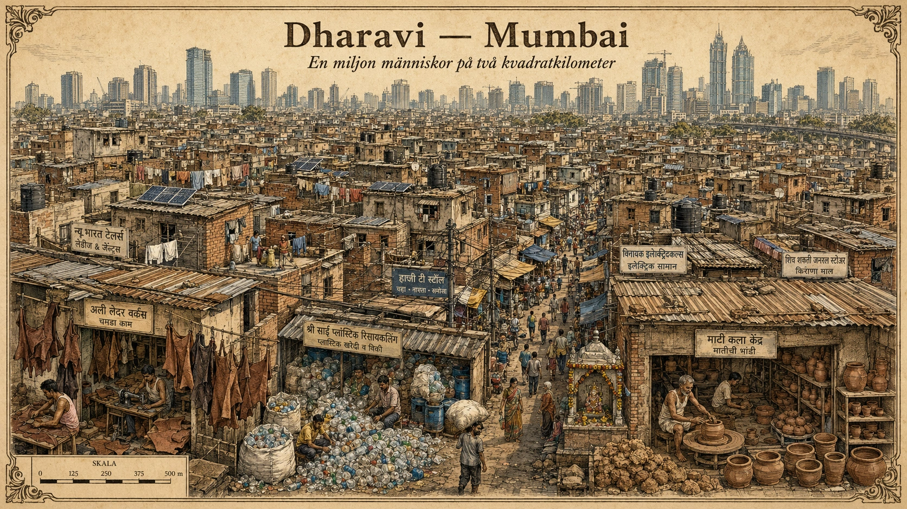

Dharavi
— Slummen som är en megastad i miniatyr —
En miljon människor på två kvadratkilometer
Mitt i Mumbai — Indiens största stad med över 21 miljoner invånare — ligger ett område som är mindre än två kvadratkilometer. Det är ungefär lika stort som 280 fotbollsplaner. Inom detta lilla område bor uppskattningsvis en miljon människor. Befolkningstätheten är därmed bland de högsta som någonsin uppmätts i mänsklighetens historia — nästan 500 000 människor per kvadratkilometer.
Området heter Dharavi. Det är ett av världens mest kända slumområden, och en plats som utmanar varje förenklad bild av vad slum är.

Slummens födelse
Dharavi började bildas på 1880-talet. Mumbai (då kallat Bombay) var en växande hamnstad under brittiskt kolonialt styre. Området som idag är Dharavi var då en träsk-aktig periferi norr om den centrala staden — en plats som ingen ville bo i. Lokala fiskare, garveriarbetare och hantverkare flyttade dit eftersom det var den enda mark de hade råd med.
Sedan kom industrialiseringen och migrationen från landsbygden. Hundratusentals fattiga indier sökte sig till Mumbai för arbete. Vissa fick jobb i hamnen, fabrikerna eller serviceyrkena. Men de hade inte råd med formellt boende. De byggde sina egna hus i Dharavi.
Under 1900-talets gång växte Dharavi sten för sten, gata för gata, hus för hus. Människor byggde över varandra, intill varandra, mellan varandra. Det fanns ingen central plan, ingen arkitekt, ingen stadsplanerare. Endast människors behov av tak över huvudet och utrymme att leva.
En osynlig ekonomi
Det som gör Dharavi unikt är inte främst dess fattigdom, utan dess ekonomi. Inom dessa två kvadratkilometer finns över 200 000 företag. Det är inte stora företag — det är små verkstäder, hantverkare, garverier, plastreturanläggningar, broderier, lädertillverkning, krukmakerier, bagerier. Tillsammans omsätter de omkring en miljard dollar per år.
Dharavi är centrum för Indiens informella läderindustri. Här återvinns en stor del av Mumbais avfall — gamla flaskor, plast, papper, metall — för att säljas vidare till industriföretag. Här tillverkas exportvaror som hamnar i kläder, accessoarer och möbler världen över.
De flesta som arbetar i Dharavi har ingen formell anställning. De arbetar för sig själva eller för en annan informell arbetsgivare. De betalar ingen skatt (i alla fall inte officiellt). De har inga arbetsförsäkringar, ingen pension. Men de arbetar.
Och de tjänar — för Indien — relativt bra. En garveriarbetare i Dharavi kan tjäna två till tre gånger så mycket som en bonde i den indiska landsbygd hen kom från. Det är därför människor fortsätter att flytta in, trots de hårda förhållandena.
Vardagen för en miljon människor
Hur fungerar livet på en sådan plats? Det är fascinerande och hårt på samma gång.
Bostaden är ofta ett litet hus på två våningar, byggt av tegel, plåt, plast eller vad som finns. En familj på fem-sex personer kan bo på 15-25 kvadratmeter. Ofta kombineras bostaden med en arbetsplats — den första våningen är verkstad, den andra är sovrum.
Vattnet är ett ständigt problem. Det offentliga vattennätet räcker inte till. Människor köper vatten från privata leverantörer, ofta till priser som per liter är högre än vad rika indier betalar.
Toaletter är offentliga och delas av många hundra människor. Köer på morgonen är vanliga. Vissa områden har förbättrats med fasta toaletter under de senaste åren tack vare insatser från NGO:er och stadsförvaltningen.
Avloppet är otillräckligt. När monsunregnen kommer i juni-augusti kan vattnet stiga och översvämma delar av området. Sjukdomar som sprids genom förorenat vatten är ett återkommande problem.
Elen finns, men ofta osäkert dragen. Många hus har olagliga eluttag direkt på huvudledningarna. Elavbrott är vanliga.
Skolor finns både offentliga och privata. Många barn i Dharavi går faktiskt i skolan, även om utbildningsnivån varierar kraftigt. Indiens system med kvotering för fattiga elever i bättre skolor gör att vissa barn från Dharavi får utbildning som föräldrarna aldrig kunnat drömma om.
Filmen som gjorde Dharavi världsberömt
År 2008 gjorde brittiska regissören Danny Boyle filmen Slumdog Millionaire. Den utspelar sig delvis i Dharavi och blev en internationell sensation som vann åtta Oscars. Plötsligt fick världen syn på det som indier länge känt till — att slummen rymmer alla livets dramatik, inte bara fattigdom utan också kärlek, ambition, brott, drömmar och hopp.
Filmen romantiserade kanske vardagen något, men den lyfte också upp en plats som tidigare varit osynlig i världsmedierna. Dharavi blev plötsligt en turistdestination — guidade turer började erbjudas. Det är fortfarande omdebatterat om sådana turer är respektfulla eller exploaterande.
Försök till "förbättring"
Indiska politiker har under decennier diskuterat vad som ska göras med Dharavi. Området är så centralt placerat i Mumbai — bara några kilometer från finansdistriktet — att marken är extremt värdefull. Skulle Dharavi kunna rivas och ersättas med moderna höghus, lägenheter och kontor?
Stora utvecklingsplaner har lagts fram. Dharavi Redevelopment Project, som lanserades 2004, föreslog att rivit och bygga om hela området. Men planerna har stötvis stannat. Skälen är många. Vem ska få bo i de nya bostäderna? Hur kan de över 200 000 företagen flyttas? Vart ska människorna ta vägen under tiden? Vad händer med de invecklade sociala nätverken som byggts upp under hundra år?
I praktiken har förbättringarna varit långsamma och fragmenterade. Vissa områden har fått förbättrade bostäder, andra ser ut som för 50 år sedan. Många Dharavi-bor är skeptiska till storskaliga planer — de fruktar att de skulle förlora både sina hem och sin försörjning utan att få något bättre tillbaka.
Vad Dharavi lär oss
Dharavi är inte ett unikum. Liknande slumområden finns i Lagos (Makoko), Nairobi (Kibera), Karachi (Orangi Town), Manila (Tondo), Rio de Janeiro (Rocinha) och dussintals andra megastäder. Tillsammans bor omkring en miljard människor i informella bosättningar världen över. Det är en åttondel av jordens befolkning.
Men Dharavi visar oss något viktigt om dessa platser:
De är inte bara fattigdom. De är komplexa ekonomiska system, sociala nätverk, kulturella mötesplatser. De rymmer entreprenörskap, hopp, kreativitet — och problem, ojämlikhet, hälsorisker.
De är inte heller bara fattigt boende. För många är livet i Dharavi bättre än det skulle ha varit på landsbygden. Det är därför människor fortsätter att flytta in. Slum är inte ett misslyckande — slum är ofta det bästa alternativ människor har.
De är en del av megastäders verklighet. Att försöka "lösa" slummen genom att riva den brukar inte fungera. Det som fungerar bättre är gradvis förbättring — bättre infrastruktur, säkrare bostäder, formella arbetstillfällen — som bygger på det som redan finns.
Och kanske viktigast: slummen har också människor. En miljon människor i Dharavi har drömmar, talanger, familjer, framtidshopp. De är inte ett problem att lösa. De är samhällsmedborgare som behöver bättre villkor att leva i. Det är ett perspektivskifte som förändrar hela frågan om hur en megastad ska planeras.
Djupdykning till avsnitt 5 (Urbanisering). Fördjupningsnivå.